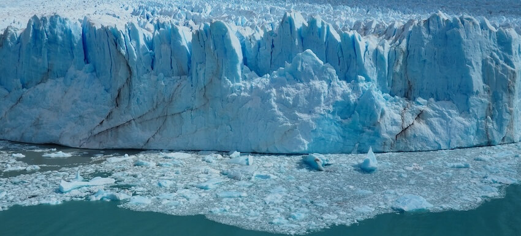
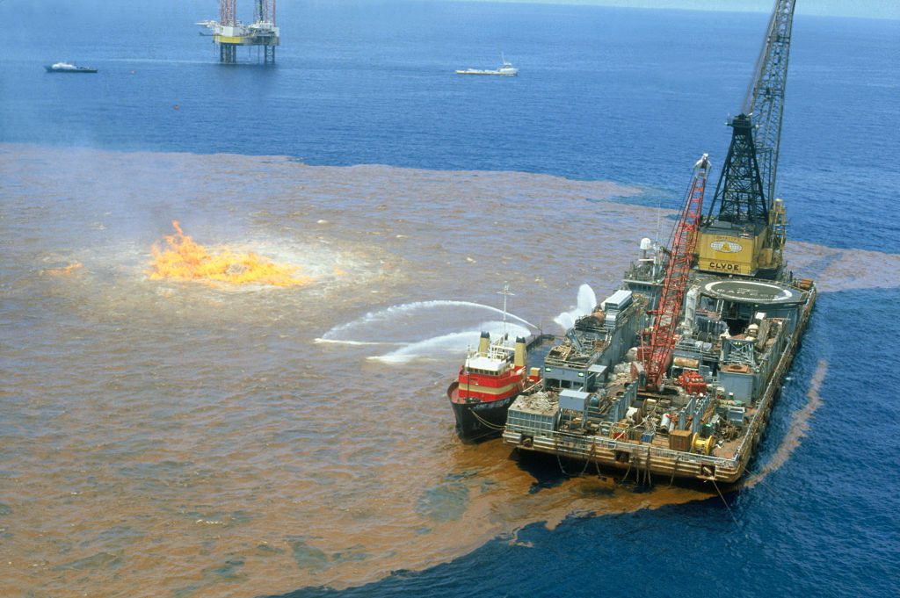

- Over 14 million tons of plastic ends up in the ocean every year.
- By 2050, it is predicted that plastic could outweigh all the fish in the sea.
- Every year, more than 1 milllion seabirds and 100,000 marine animals die from plastic pollution.
- About 8 million pieces of plastic make their way to the oceans every day.
Plastic Pollution
Overfishing
&
Illegal
Fishing
- Over 37% of global fish stocks were overfished as of 2024.
- The decline of predatory species like Sharks and Tuna leads to an overabundance of smaller fish, which may unbalance marine biodiversity.
- Overfishing is a primary driver of mass extinction in the world's oceans, with over one-third of Sharks and Rays threatened with extinction.

Climate
- Since 1970, global oceans have absorbed over 90% of excess heat, with warming rates doubling since 1993, worsening marine impacts.
- A temperature increase of 1.5oC threatens to destroy 70-90% of coral reefs, and a 2oC rise could result in nearly 100% loss.
- Marine heatwaves have caused mass mortality events, such as the deaths of 25 benthic species
Benthic species are organisms that live on or
near the seafloor in oceans, lakes, or rivers.
They can be fixed (sessile) like corals or mobile
like crabs and starfish. These species play a key
role in nutrient recycling and marine food chains. in the Mediterranean in 2003
Climate
Change
&
Ocean Warming
Ocean
Acidification
- Since 1985, seawater pH has decreased from 8.11 to 8.05, corressponding to a 15% increase in acidity.
- Corals struggle to form their calcium carbonate skeletons in more acidic conditions, leading to weaker reef structures.
- Studies indicate a 30% reduction in animal biodiversity as average pH declines from 8.11 to 7.8, affecting various macrofauna.

Oil Spilling
- Oil spills introduce
Polycyclic Aromatic Hydrocarbons
Polycyclic Aromatic Hydrocarbons (PAHs) are toxic
chemicals formed by burning fuels like coal or oil.
They can cause cancer, harm the environment, and
build up in soil, water, and living organisms. (PAHs) into marine ecosystems, which can accumulate in the tissues of marine organisms, leading to long-term health effects and potential transfer upto foood chain. - Exposure to oil and chemical pollutants can cause reproductive and developmental damage in marine oragnisms, including fish and invertebrates.
Oil Spilling
&
Chemical Pollution
Invasive Species
- Invasive species are considered the second greatest threat to marine and coastal biodiversity worldwide, following habitat loss.
- Invasive species are responsible for about $138 billion annually in lost revenue and management costs in the United States alone.
- Marine vertebrate populations have halved in recent decades, with invasive species beign a major driver of this loss.